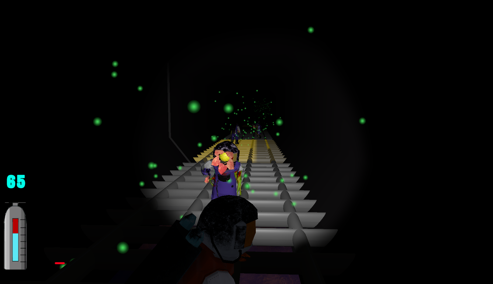

Invasive

Invasive
A short horror game where you explore an abandoned laboratory crawling with... plant monsters?
Overview
Invasive is a horror game developed using Unity where players enter a laboratory on another planet looking for their spouse. They must evade the plants which have taken over the lab, solve puzzles and find the survivors.
Contributions
I was the lead programmer on this project. I did all of the Unity C# programming involved in the game mechanics i.e. character movement, animations, stealth, UI interaction etc. I also created the textures for all of the models using Substance Painter.